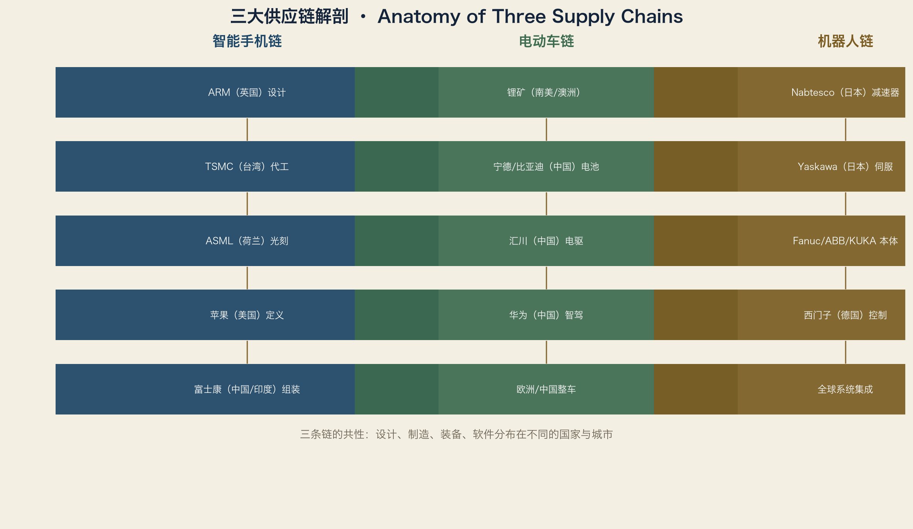

把五种流放到产品上，一切就具体了。
5.1 案例一：智能手机
设计：美国（苹果，加州库比蒂诺）
芯片设计：英国（ARM）+ 美国（苹果自研）
制造：台湾（台积电，新竹/台南）
设备：荷兰（ASML，埃因霍温）+ 日本（东京电子）
组装：中国（郑州富士康、深圳立讯）+ 印度（金奈）
销售：全球
回收：中国/美国专业回收企业
一部手机，跨越至少八个国家。它的地图上，最重要的不是组装厂，而是设计、设备、代工三个节点。
5.2 案例二：电动车
电池：中国（宁德、比亚迪）→ 欧洲工厂（匈牙利、德国）
电驱：中国（汇川、比亚迪）→ 本地化供应
芯片：欧洲（英飞凌）+ 美国（英伟达）+ 中国（地平线）
整车：中国（比亚迪、蔚来）+ 欧洲（大众、宝马转型）
软件：中国（华为、小鹏）+ 美国（特斯拉）
充电：中国（特来电）+ 欧洲（ABB、西门子）
电动车的旅程，是中国第一次把“定义权”带进全球汽车地图。
5.3 案例三：工业机器人
减速器：日本（纳博特斯克 RV、哈默纳科谐波）
伺服：日本（安川、三菱）+ 中国（汇川）
控制器：日本/欧洲/中国
本体：日本（发那科）、欧洲（ABB、库卡）、中国（埃斯顿）
系统集成：全球本地公司
最终用户：汽车厂、电池厂、电子厂
机器人的旅程揭示“卡脖子”的经典结构：本体可以很多家，关节只能少数家。
5.4 案例四：一条饮料灌装线（回顾第一卷）
广州啤酒厂 → Krones（德国新特劳布林）→ SEW（布鲁赫萨尔）
→ SICK/Balluff（巴符州）→ 海康（杭州）→ Siemens（慕尼黑）
→ 汇川（深圳/苏州）→ SAP（沃尔多夫）
这条线的本质：德国做物理标准，中国做市场与迭代，软件由两国共同定义。
5.5 方法：如何从一件产品反推世界地图
第 1 步：拆开产品，列出 BOM（物料清单）
第 2 步：对每个关键部件问三个问题：
谁设计？谁制造？谁提供设备？
第 3 步：把供应商标到地图上
第 4 步：画依赖矩阵（替代供应商、备货天数）
第 5 步：找出“地图上只有一个点的部件”= 卡脖子
这套方法不需要内幕信息，只需要：
公开年报、拆解报告、行业媒体、展会资料
5.6 本卷总结
货物流告诉我们：世界的“血管”在哪里
资本流告诉我们：地图为什么每年都在改版
技术流告诉我们：哪些节点最值钱
人才流告诉我们：地图十年后会变成什么样
产品案例告诉我们：这一切如何串成一条线
下一卷，把流动沉淀成规律。
词汇笔记（Vokabelnotiz）
| 中文 | Deutsch | English |
|---|---|---|
| 全球旅程 | globale Reise | Global journey |
| 拆解 | Teardown | Teardown |
| 定义权 | Definitionsmacht | Power to define |
| 反推 | zurückverfolgen | Trace back |